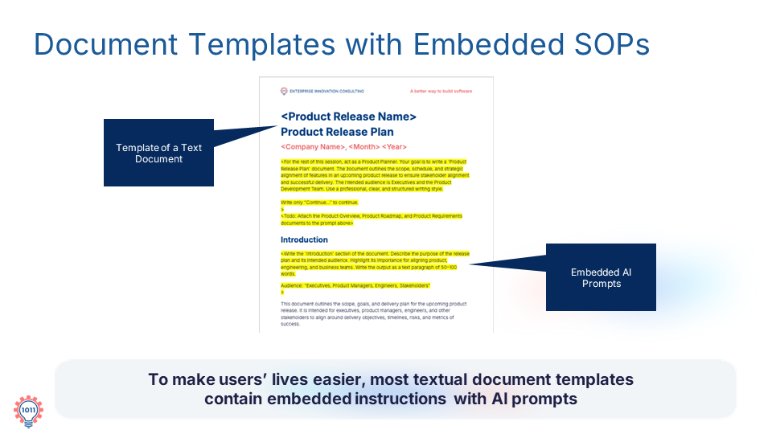

Combining document templates with embedded standard operating procedures and AI prompts to guide users directly within their workflow artifacts.
In many cases, templates and SOPs are combined. Most textual templates include embedded instructions and AI prompts, guiding users directly within the document.
This means you don't need to switch between different resources. You get guidance exactly when you need it.

INTEGRATED SOPDIRECT GUIDANCE: Instructions embedded straight into textual template fields.
EMBEDDED PROMPTSIN-CONTEXT AI: Prompts built directly into document sections for immediate use.
Benefits of Embedded SOPs
Combining templates and operational procedures directly inside documents yields key efficiency and accuracy improvements:
COGNITIVE LOAD
Reduced Cognitive Load & Friction
By delivering step-by-step guidance right where the work happens, users spend less mental energy navigating back and forth between guidelines and workspace.
ERROR REDUCTION
Minimized Errors & Smoother Process
In-line instructions keep users on track, preventing missed steps and streamlining the entire drafting workflow.
QUALITY CONTROL
Reinforced Consistency & Quality
Having pre-formulated prompts built directly into the file guarantees that all produced outputs strictly meet enterprise standards.
As a result, cognitive load is reduced, errors are minimized, and the overall process becomes smoother while reinforcing consistency and quality across all outputs.
Practice
Test an embedded template workflow by filling out a section of the Course Outline Template using inline instructions directly from the document contract below:
DOCUMENT SECTION: Introduccion
INLINE INSTRUCTIONS: State the problem and primary user persona.
EMBEDDED PROMPT: "Write the “Introduction” section of the document. Explain the purpose of the Course Outline document, what planning decisions it captures, and how it is used by Course Planner and Course Creator. Describe how the document supports alignment before course development begins. Write the output as one concise paragraph under 150 words. Audience: "Executives, Marketing, and Course Development teams"
Run the embedded prompt inside your workspace and confirm that the resulting text satisfies both the document layout and procedural goals without leaving your document editor.